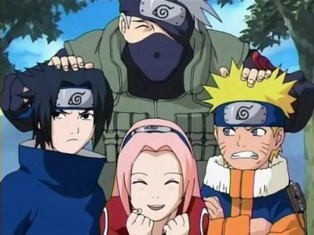

- Animés

- Dessins Animés
- Films d'animation
- A vous de jouer
Naruto Uzumaki (うずまき ナルト, Uzumaki Naruto) est un personnage de fiction, principal protagoniste du manga Naruto inventé par Masashi Kishimoto.
Dans l'univers de la série, Naruto est un jeune ninja du village de Konoha membre du clan Uzumaki. D'après Kushina Uzumaki, le clan Senju et le clan Uzumaki ont un lointain lien de sang.Hôte du démon renard à neuf queues nommé Kurama ou Kyûbi, une créature qui a attaqué le village par le passé, il est rejeté par les autres villageois. Son ambition est de devenir Hokage, le chef du village,le plus fort de Konoha, afin de gagner le respect des habitants.
De caractère joyeux et déterminé, il parvient au fil de la série à se lier d'amitié avec plusieurs ninjas du village et tout particulièrement avec Sasuke Uchiwa, qu'il considère comme son frère et rival. Au fur et à mesure de sa progression dans la série, il parvient à se faire accepter par les habitants du village, jusqu’à devenir un héros pour eux après les avoir protégés. Il s'est rapidement avéré être l'un des principaux acteurs ayant remporté la quatrième grande guerre Shinobi, le conduisant à réaliser son rêve et à devenir le septième Hokage du village Konoha.
Au village caché de Konoha, les enfants sont entraînés, dès leur plus jeune âge, afin de devenir des ninjas. Le Hokage, protecteur et chef du village, est reconnu comme étant le ninja le plus puissant. Il y a de cela douze ans, Kyûbi, un démon ayant la forme d'un renard à neuf queues, entreprit la destruction du village de Konoha, mais le quatrième Hokage neutralisa ce démon en le scellant dans le corps d'un nouveau-né : Naruto Uzumaki. Le quatrième Hokage se sacrifia ainsi pour sauver le village de Konoha.
L'histoire commence pendant l'adolescence de Naruto, vers ses douze ans. Orphelin, éternel cancre et grand farceur, il fait toutes les bêtises possibles pour se faire remarquer. Son rêve : devenir Hokage afin d'être reconnu par les habitants de son village.
En effet, le démon scellé en lui a attisé la crainte et le mépris des autres villageois, qui, avec le temps, ne font plus de différence entre le Kyûbi et Naruto. Malgré cela, Naruto s'entraîne dur afin de devenir genin, le premier niveau chez les ninjas.
Après plusieurs essais, il arrive finalement à recevoir son bandeau frontal de Konoha et la promotion qui va avec. Il est alors inclus dans une équipe de trois, avec Sakura Haruno et le talentueux Sasuke Uchiwa.
L'Équipe Kakashi, connue aussi sous le nom d'Équipe 7, est une équipe dirigée par Kakashi Hatake et formée à la suite de la promotion en tant que genin de ses membres. Les membres furent choisis afin d'équilibrer les forces : Naruto, le pire élève de sa classe, bénéficierait ainsi de l'intelligence de Sakura et des talents de ninja de Sasuke. Sakura quant à elle se retrouverait avec des coéquipiers faits pour le combat, tandis que Sasuke se verrait forcé de travailler en équipe.

Suite à quelques missions, Kakashi considère les membres de son équipe prêts à devenir chūnin. Ce niveau, entre celui de genin et celui de jōnin, leur permettra d'accomplir des missions de plus grande importance. Cependant, un criminel exilé du village nommé Orochimaru interrompt l'examen pour détruire Konoha. Son arme principale pour cette opération est un jeune homme, Gaara, qui possède comme Naruto un démon. Naruto, aidé par ses amis, réussira à le vaincre, et le village sera sauvé grâce au sacrifice du troisième Hokage.

L'Akatsuki (暁, Akatsuki, Signifiant littéralement : « Aube » ou « Lever du jour ») est l'organisation criminelle la plus activement recherchée dans le monde ninja. Exceptés Konan et Nagato, ses membres sont tous des ninjas répertoriés au Bingo Book.
Son objectif affiché est la domination du monde et pour ce faire, leurs membres jouent les mercenaires auprès des différents pays et tentent de capturer tous les bijû afin de ramener Jûbi à la vie et d'instaurer une « paix » durable.
Les membres de l'Akatsuki sont, à l'exception de Konan et Nagato, des ninjas déserteurs. Hormis Zetsu, l'espion de l'organisation capable de se séparer en deux, ils évoluent en binômes et effectuent leurs missions à l'international.
L'organisation se retrouve rarement au complet, le rituel d'extraction pouvant être géré à distance par le biais d'hologrammes. L'Akatsuki dispose également d'un certain nombre de repaires secrets pouvant servir de points de repli.
En revenant au village, Naruto est confronté par Sasuke, qui se pense encore une fois inférieur, et qui quitte alors Konoha pour rejoindre Orochimaru pour acquérir la force nécessaire afin de vaincre Itachi et ainsi venger la destruction de son clan. Naruto tente de l'en empêcher, mais suite à son échec partira aussi s'entraîner avec Jiraya.
C’est un individu complexe. Assoiffé de pouvoir et de grandeur, il est malgré tout quelqu’un de calme et réfléchi. Il n’est pas particulièrement froid, et s’occupe de ceux qui l’intéressent avec soin. Ca se limite actuellement à Kabuto et Sasuke.
Il est coupable d’expérience sur des humains, aussi bien morts que vivants… Cela sous-entend aussi une imposante connaissance en science. C’est d’ailleurs ce que vise Orochimaru. Il veut pouvoir collecter la totalité des jutsus existants dans le monde pour ensuite être en mesure de créer de nouveaux. Orochimaru veut la connaissance parfaite pour le plaisir que représente de le posséder. C’est dans ce but qu’il convoite le corps de Sasuke : il est jeune, a du potentiel, et possède le Sharingan, ce qui accélèrerait sa quête de jutsus. Sasuke n’est finalement qu’un outil comme un autre.
 Dragon Ball Z
Dragon Ball Z Là-haut
Là-haut Mulan
Mulan